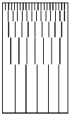
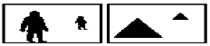
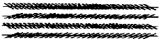
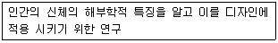

실내건축산업기사 (2004-08-08 기출문제)
1과목: 실내디자인론
1. 다음 중 2인용 침대인 더블베드(double bed)의 크기로 가장 적당한 것은?
- 1,000mm× 2,100mm
- 1,150mm× 1,800mm
- 1,350mm× 2,000mm
- 1,600mm× 2,400mm
(정답률: 86%)

2. 주택의 거실에 대한 설명이 잘못된 것은?
- 다목적 기능을 가진 공간이다.
- 전체 평면의 중앙에 배치하여 각실로 통하는 통로로서의 기능을 부여한다.
- 거실의 면적은 가족수와 가족의 구성 형태 및 거주자의 사회적 지위나 손님의 방문 빈도와 수 등을 고려하여 계획한다.
- 가족들의 단란의 장소로서 공동사용공간이다.
(정답률: 77%)
3. 문과 창에 대한 설명 중 잘못된 것은?
- 문은 공간과 인접공간을 연결시켜 준다.
- 문과 창의 위치는 가구배치와 동선에 영향을 준다.
- 문은 외부의 모든 요소를 받아들이면서 채광, 환기, 통풍, 조망 등의 역할을 한다.
- 창에는 프라이버시를 위한 가림처리를 하는 것이 좋다.
(정답률: 83%)
4. 전통 한옥의 구조에서 중채 또는 바깥채에 있어 주로 남자가 기거하고 손님을 맞이하는데 쓰이는 방은?
- 안방
- 건넌방
- 사랑방
- 대청
(정답률: 79%)
5. 디자인의 원리 중 균형에 대한 설명으로 가장 적당한 것은?
- 자유로운 형과 변화를 가지고 있으면서 전체로서 조화와 힘의 안정을 유지하고 있는 상태
- 순차적으로 조금씩 변화해 가는 현상
- 성질이나 질량이 전혀 다른 둘 이상의 것이 동일한 공간에 배열될 때 서로의 특질을 한층 돋보이게 하는 현상
- 두 요소가 서로 조화되지 않고 경쟁관계에 있으면서 항상 갈등의 상태에 있는 것
(정답률: 88%)
6. 선의 종류와 그 성격의 연결이 가장 옳지 않은 것은?
- 수평선 - 안정, 편안함
- 수직선 - 평화, 침착
- 사선 - 생동감
- 곡선 - 우아, 풍요
(정답률: 82%)
7. 할로겐 전구의 특성으로 옳은 것은?
- 유리구 내벽의 흑화가 없다.
- 수명이 백열 전구의 70% 정도이다.
- 점등부속장치가 필요하다.
- 휘도가 낮고 배광제어가 용이하지 않다.
(정답률: 45%)
8. 날개의 각도를 조절하여 일광, 조망, 시각의 차단정도를 조정하는 창가리개는?
- 드레이퍼리
- 블라인드
- 커텐
- 케이스먼트
(정답률: 67%)
9. 개방식 배치의 한 형식으로 업무와 환경을 경영관리 및 환경적 측면에서 개선한 것으로 오피스 작업을 사람의 흐름과 정보의 흐름을 매체로 효율적인 네트워크가 되도록 배치하는 방법은?
- 세포형 오피스(cellular type office)
- 집단형 오피스(group space office)
- 싱글 오피스(single office)
- 오피스 랜드스케이프(office landscape)
(정답률: 87%)
10. 실내디자인에 앞서 대상공간에 대해 디자이너가 파악해야 할 외적 작용요소가 아닌 것은?
- 건물주의 경제적 사항
- 기존 건물의 용도 및 법적인 규정
- 전기, 냉난방 설비시설
- 비상구 등 긴급 피난시설
(정답률: 66%)
11. 다음 중 실내디자인과 건축이 각각 독립된 개념으로 정리되기 시작한 시기는?
- 20세기
- 18세기
- 16세기
- 15세기
(정답률: 49%)
12. 주거공간의 개념계획도에 대한 설명으로 옳지 않은 것은?
- 공간을 부엌, 식당, 연결 공간 등 다이어그램으로 표시한다.
- 동선을 선으로 연결하여 개념적인 공간을 보여준다.
- 한번 계획된 개념도는 가능하면 수정하지 않는 것이 좋다.
- 개념계획도가 확정되면 평면도를 그린다.
(정답률: 78%)
13. 디자인의 요소 중 선에 관한 아래의 그림이 의미하는 것은?

- 선을 포개면 패턴을 얻을 수 있다.
- 선을 끊음으로써 점을 느낀다.
- 조밀성의 변화로 깊이를 느낀다.
- 양감의 효과를 얻는다.
(정답률: 73%)
14. 디자인의 원리 중 착시 현상에 해당되지 않는 그림은?


(정답률: 32%)
15. 일반적으로 규칙적인 요소들의 반복에 의해 나타나는 통제된 운동감으로 정의되는 것은?
- 강조(emphasis)
- 균형(balance)
- 비례(proportion)
- 리듬(rhythm)
(정답률: 85%)
16. 실내디자인에 대한 설명으로 올바르지 않은 것은?
- 실내디자인은 이용자특성에 대한 제약을 벗어나 공간예술 창조의 자유가 보장되어야 한다.
- 효율적인 공간창출을 위하여 제반요소에 대한 분석작업이 우선되어야 한다.
- 인간의 활동을 도와주며, 동시에 미적인 만족을 주는 환경을 창조한다.
- 건축 및 환경과의 상호성을 고려하여 계획하여야 한다.
(정답률: 91%)
17. 다음 중 인체지지용 가구가 아닌 것은?
- 소파
- 침대
- 책상
- 붙박이의자
(정답률: 78%)
18. 아래의 내용은 인간과 실내환경의 관계에서 어떤 것을 설명하고 있는가?

- 지각론
- 심리학
- 형태학
- 인간공학
(정답률: 75%)
19. 점의 인식에 대한 설명 중에서 적당하지 않은 것은?
- 가까운 거리에 위치하는 두개의 점은 장력의 작용으로 선이 생긴다.
- 나란히 있는 점은 간격에 따라 집합, 분리의 효과를 얻는다.
- 공간의 중심에 점이 있음으로써 단순하지만 주목성을 높인다.
- 많은 점들이 근접해 있을 경우 각 점의 독립성이 강조된다.
(정답률: 79%)
20. 이미지 보드에 대한 다음 설명 중 옳지 않은 것은?
- 클라이언트의 요구사항에 맞는 인테리어스타일을 쉽게 이해하도록 하기 위해 만들어진다.
- 잡지나 카탈로그 등의 사진자료를 꼴라주하여 만드는 것도 하나의 방법이다.
- 이미지 보드는 클라이언트를 설득하기 위한 것으로 설계자의 설계진행과정에 필요한 것은 아니다.
- 실내디자인의 플래닝이나 표현양식 등을 표현하는 것으로 프리젠테이션을 위해 사용한다.
(정답률: 90%)
2과목: 색채 및 인간공학
21. 다음 중 가장 무거운 느낌의 색은?
- 적색 기미의 명도가 높은 색
- 황색 기미의 명도가 높은 색
- 자색 기미의 중명도 색
- 청색 기미의 명도가 낮은 색
(정답률: 64%)
22. 무대에서 연극을 할 때 조명의 효과가 크게 작용한다. 색의 혼합 중 어떤 것을 이용하여 효과를 높이는가?
- 병치혼합
- 감산혼합
- 중간혼합
- 가산혼합
(정답률: 52%)
23. 등색상 삼각형에서의 색채조화 이론을 발표한 사람은?
- 먼셀
- 헤링
- 오스트발트
- 문· 스펜서
(정답률: 68%)
24. 건축물의 색채조절의 효과로 관련이 가장 적은 것은?
- 눈의 긴장과 피로가 감소 된다.
- 능률이 향상되어 생산력이 높아진다.
- 유지, 관리의 어려움이 있다.
- 사고나 재해를 감소 시킨다.
(정답률: 72%)
25. 헤링은 반대색설에서 「합성이라는 동화작용이 생기면 세가지 색감각을 일으킨다」고 했다. 이 세가지 색감각은?
- 백, 적, 황
- 흑, 녹, 청
- 흑, 적, 황
- 백, 녹, 청
(정답률: 43%)
26. 귀의 주파수(가청주파수) 특성은 음압의 레벨에 의해서 변하는데 레벨이 낮을때 나타나는 현상은?
- 저주파 음의 감도가 나빠진다.
- 저주파 음의 감도가 좋아진다.
- 고주파 음의 감도가 나빠진다.
- 고주파 음의 감도가 좋아진다.
(정답률: 35%)
27. 다음 중 실내 면의 추천반사율이 가장 높은 것은?
- 바닥
- 천정
- 가구
- 창문발
(정답률: 64%)
28. 엄격한 병렬 배치에 있어서는 경우에 따라서 물리적 부품이든 사람이든 간에 동일한 부품이 독립적으로 사용된다. 만약 각 부품의 신뢰도가 0.9라면, 두 부품의 결합 확률(즉, 체계의 신뢰도)은?
- 0.79
- 0.81
- 0.95
- 0.99
(정답률: 22%)
29. 조명설계시 필요한 요소 중 틀린 것은?
- 작업 중 손 주변을 일정하게 비출 것
- 작업 중 손 주변을 적당한 밝기로 비출 것
- 작업부분과 배경사이에 콘트라스트를 없앨 것
- 광원이나 각 표면의 반사가 적당한 강도와 색을 지닐 것.
(정답률: 71%)
30. 적색에 백색을 가하면 핑크색으로 변한다. 이때 핑크색은 어떻게 되었다고 할 수 있는가?
- 적색보다 명도는 높아졌고, 채도는 낮아졌다.
- 적색보다 명도, 채도 모두 높아졌다.
- 적색보다 명도는 낮아졌고 채도는 높아졌다.
- 적색보다 명도, 채도 모두 낮아졌다.
(정답률: 47%)
31. 옥외 일조 조건하에서 흰바탕에 검은색 숫자의 명시거리를 측정한 결과 최적 독해성(legibility)을 주는 획폭비는 어느정도인가?
- 1:12
- 1:10
- 1:8
- 1:6
(정답률: 65%)
32. 자동차의 제어기(brake)처럼 많은 힘을 요구하는 페달의 부착에서 대퇴부(大腿部)와 경부(經部)의 가장 쾌적한 각은?
- 90°
- 100°
- 120°
- 150°
(정답률: 61%)
33. 다음 색 중 채도가 가장 높은 색은?
- 5R 8/4
- 5R 5/8
- 5R 7/2
- 5R 4/6
(정답률: 66%)
34. 바안즈의 동작경제의 원칙에 대한 설명 중 틀린 것은?
- 두 손의 운동을 동시에 개시하고 동시에 끝낼 것
- 두 손은 휴식시간 이외에는 동시에 손을 쉬게하지 말 것
- 양팔의 동작은 동시에 반대방향에서 대칭적으로 운동시킬 것
- 크랭크나 대형 드라이버의 손잡이는 가능한 좁게 손바닥에 닿도록 해야한다.
(정답률: 38%)
35. 평형감각에서 직선운동 및 중력을 느끼는 감수기관으로서 비행기를 탈 때 중요한 도움이 되는 지각을 주는 것과 동시에 느끼지 않도록 훈련을 해야 하는 유해로운 지각까지도 주는 기관은?
- 외이
- 외이도와 중이골
- 정원창
- 난원낭과 구상낭
(정답률: 25%)
36. 다음 중 가장 침정감을 주는 색상은?
- 빨강
- 다홍
- 주황
- 파랑
(정답률: 80%)
37. 무채색과 유채색의 대비에서 일어나는 대비현상이 아닌 것은?
- 명도대비
- 색상대비
- 채도대비
- 연변대비
(정답률: 17%)
38. 배경을 검정으로 했을 때 가시도가 가장 높은 색은?
- 청록
- 빨강
- 노랑
- 자주
(정답률: 70%)
39. 인체계측 데이터의 적용시, 하위 백분위수를 기준으로 디자인해야 하는 것은?
- 연속배열시 의자와 의자사이의 폭
- 그네, 줄사다리와 같은 지지물
- 문의 높이
- 선반의 높이
(정답률: 72%)
40. 신문을 읽거나 편히 쉬기 위한 의자의 바람직한 특징은 보다 활동적인 용도에 쓰이는 의자와 달리 좌판 각도는 25° ∼26°, 좌판 높이는 37∼38cm이 추천된다. 또한 이 등판 각도로 추천하는 각도는?
- 90∼92°
- 95∼100°
- 1⑤∼108°
- 120∼135°
(정답률: 46%)
3과목: 건축재료
41. 다음의 미장재료에 대한 설명 중 옳지 않은 것은?
- 회반죽은 석고에 모래, 해초풀, 여물 등을 혼합하여 바르는 미장재료이다.
- 돌로마이트플라스터는 분말도가 미세한 것이 시공이 용이하고 마감이 아름다우며 균열의 발생도 적다.
- 석고플라스터의 우수한 성질은 경화ㆍ건조시 치수 안정성과 뛰어난 내화성이다.
- 석회바름은 건조하면 수축하나 소석고는 경화시 오히려 팽창한다.
(정답률: 16%)
42. 콘크리트에 사용되는 모래의 염분 함유량은 얼마 이하로 하는가?
- 0.04%(NaCl)
- 0.1%(NaCl)
- 0.03%(NaCl)
- 0.3%(NaCl)
(정답률: 21%)
43. 목재의 역학적 성질에 대한 설명 중 옳지 않은 것은?
- 섬유포화점 이상에서는 강도는 일정하나 섬유포화점 이하에서는 함수율이 감소할수록 강도는 증대한다.
- 비중이 증가할수록 외력에 대한 저항이 증가한다.
- 목재의 강도나 탄성은 가력방향과 섬유방향과의 관계에 따라 현저한 차이가 있다.
- 압축강도는 옹이가 있으며 감소하나 인장강도는 영향을 받지 않는다.
(정답률: 74%)
44. 콘크리트용 골재에 요구되는 성질에 관한 설명으로 옳지 않은 것은?
- 유해량의 먼지, 흙, 유기불순물 등을 포함하지 않을 것
- 강도는 콘크리트 중의 경화시멘트 페이스트의 강도 이상일 것
- 입도는 조립에서 세립까지 연속적으로 균등히 혼합되어 있을 것
- 잔골재는 씻기시험 손실량이 6.0% 이하일 것
(정답률: 35%)
45. 다음 중 건축물을 도장하는 목적과 가장 관계가 먼 것은?
- 방수
- 미관의 향상
- 내구성 향상
- 내력 향상
(정답률: 59%)
46. 금속의 부식 방지대책으로 옳지 않은 것은?
- 가능한 한 두 종의 서로 다른 금속은 틈이 생기지 않도록 밀착시켜서 사용한다.
- 균질한 것을 선택하고 사용할 때 큰 변형을 주지 않도록 주의한다.
- 표면을 평활, 청결하게 하고 가능한 한 건조상태를 유지하며, 부분적인 녹은 빨리 제거한다.
- 큰 변형을 준 것은 가능한 한 풀림하여 사용한다.
(정답률: 44%)
47. 석회암이 변화되어 결정화한 것으로 실내장식재, 조각재로 사용되는 것은?
- 점판암
- 사암
- 응회암
- 대리석
(정답률: 64%)
48. 단열재에 대한 설명 중 맞지 않은 것은?
- 유리면 - 유리섬유를 이용하여 만든 제품으로서 유리솜 또는 글라스울이라고 한다.
- 암면 - 상온에서 열전도율이 낮은 장점을 가지고 있으며 철골 내화피복재로서 많이 이용되고 있다.
- 석면 - 불연성, 보온성이 우수하고 습기에도 강하여 선진국에서 적극적으로 사용을 권장하고 있다.
- 펄라이트 보온재 - 경량이며 수분침투에 대한 저항성이 있어 배관용의 단열재로 사용된다.
(정답률: 58%)
49. 열가소성 수지의 일종으로 무색투명판은 광선이나 자외선의 투과성이 크고 내후성, 내약품성이 큰 것은?
- 멜라민수지
- 아크릴수지
- 알키드수지
- 에폭시수지
(정답률: 70%)
50. ALC 제품의 특성에 관한 설명 중 맞지 않는 것은?
- 경량으로서 시공이 용이하다.
- 단열 및 차음성이 크다.
- 강알카리성이며 변형과 균열의 위험이 크다.
- 흡수성이 크다.
(정답률: 55%)
51. 다음 중 점토제품인 것은?
- 테라코타
- 논슬립
- 코너비드
- 조이너
(정답률: 78%)
52. 목재의 접합에서 2개의 접합부 사이에 끼워 볼트와 같이 사용하여 전단에 견디도록 하는 접합철물은?
- 스크류앵커
- 듀벨
- 드라이브핀
- 인서트
(정답률: 75%)
53. 목재의 성질에 관한 설명 중 옳은 것은?
- 목재의 진비중은 수종, 수령에 따라 현저하게 다르다
- 목재의 강도는 함수율이 증가하면 할수록 증대된다.
- 일반적으로 인장강도는 응력의 방향이 섬유방향에 평행한 경우가 수직인 경우보다 크다.
- 목재의 인화점은 400~490℃ 정도이다.
(정답률: 44%)
54. 집성목재에 대한 설명 중 옳지 않은 것은?
- 옹이, 균열 등의 각종 결점을 제거하거나 이를 적당히 분산시켜 되도록 균질한 조직의 인공목재를 제조할 수 있다.
- 보, 기둥, 아치, 트러스 등의 구조재료로 사용할 수 있다.
- 직경이 작은 목재들을 접착하여 장대재(長大材)로 활용할 수 있으므로 자원을 절약할 수 있다.
- 소재를 약제처리 후 집성접착하므로 양산이 어려우며 건조균열 및 변형 등을 피할 수 없다.
(정답률: 35%)
55. 다음 합성수지에 대한 설명 중 틀린 것은?
- 요소수지는 열경화성수지로 공업용보다는 일용품, 장식품 등에 많이 사용된다.
- 실리콘수지는 탄성을 가지며 내후성 및 내화학성 등이 우수하기 때문에 접착제, 도료로서 주로 사용된다.
- 페놀수지는 내알칼리성이 우수하며 성형품 접착제보다는 도료로 많이 쓰인다.
- 에폭시수지는 내약품성이 있으므로 실험실 등의 도료로서 적당하다.
(정답률: 36%)
56. 공기중의 탄산가스와 화학반응을 일으켜 경화하는 미장재료는?
- 석고 플라스터
- 시멘트
- 돌로마이트 플라스터
- 진흙
(정답률: 50%)
57. 알루미늄 창호에 대한 설명으로 옳지 않은 것은?
- 강성이 크고, 열에 의한 변형이 작다.
- 비중이 작아 경량이다.
- 산, 알칼리 및 해수에 침식되기 쉽다.
- 강제 창호에 비하여 내화성이 낮다.
(정답률: 45%)
58. 석고계 플라스터 중 가장 경질이며 벽바름 재료뿐만 아니라 바닥바름 재료로도 사용되는 것은?
- 킨스시멘트
- 혼합석고 플라스터
- 회반죽
- 돌로마이트 플라스터
(정답률: 66%)
59. 접착제를 사용할 때의 주의사항으로 옳지 않은 것은?
- 피착제의 표면은 가능한 한 습기가 없는 건조상태로 한다.
- 용제, 희석제를 사용할 경우 과도하게 희석시키지 않도록 한다.
- 용제성의 접착제는 도포 후 용제가 휘발한 적당한 시간에 접착시킨다.
- 접착처리 후 일정한 시간 내에는 가능한 한 압축을 피해야 한다.
(정답률: 39%)
60. 점토벽돌에 대한 설명으로 틀린 것은?
- 1종 점토벽돌의 압축강도는 210kgf/cm2이상이어야 한다.
- 표준형벽돌의 길이의 치수허용차는 ±5.0mm 이다.
- 표준형벽돌의 치수는 190 × 90 × 57mm 이다.
- 휨강도 및 압축강도에 따라 등급이 나뉜다.
(정답률: 26%)
4과목: 건축일반
61. 높이 41m를 넘는 층 중 최대층 바닥면적이 6,000m2인 호텔에서의 비상용 승강기의 최소 설치 댓수는?
- 2대
- 3대
- 4대
- 5대
(정답률: 44%)
62. 다음 중 철근콘크리트보의 배근에 있어 주근의 이음 위치로 가장 적당한 곳은?
- 보의 중간 위치에
- 압축력이 가장 적게 발생되는 곳에
- 인장력이 가장 적게 발생되는 곳에
- 지점으로부터 span의 1/4 위치에
(정답률: 63%)
63. 벽돌내쌓기에 관한 설명 중 부적당한 것은?
- 벽체에 마루를 놓기 위하여 벽돌을 벽면에서 부분적으로 또는 길게 내쌓는 것을 벽돌 내쌓기라 한다.
- 내쌓기는 보통 1/8B 한켜씩 또는 1/4B 두켜씩 내쌓는다.
- 내쌓기의 내미는 정도는 2B 한도로 한다.
- 내쌓기는 길이쌓기로 하는 것이 좋다.
(정답률: 37%)
64. 계단을 대체하여 설치하는 경사로의 경사도 기준은?
- 1/6 이하
- 1/7 이하
- 1/8 이하
- 1/10 이하
(정답률: 41%)
65. 고딕(Gothic)건축의 특징적 내용과 거리가 먼 것은?
- 그리스 십자형(Greek Cross) 평면
- 리브 볼트(Rib Vault)
- 장미창(Rose Window)
- 첨두형 아치(Pointed Arch)
(정답률: 44%)
66. 다음의 거실관련기준에 대한 설명 중 옳지 않은 것은?
- 숙박시설에 설치되는 거실의 반자는 그 높이를 2.1m 이상으로 하여야 한다
- 단독주택에서 환기를 위하여 거실에 설치하는 창문의 면적은 그 거실의 바닥면적의 1/20 이상이어야 한다.
- 수시로 개방이 가능한 미닫이로 구획된 2개의 거실은 각각 별도의 환기설비를 해야 한다.
- 기계환기 장치를 설치한 경우는 환기를 위한 창문등을 설치할 필요가 없다.
(정답률: 25%)
67. 벽돌벽 균열이 생기는 원인 중 시공상의 결함은?
- 기초의 부동침하
- 문꼴 크기의 불합리ㆍ불균형배치
- 불균형 또는 큰 집중하중
- 벽돌 및 모르타르 강도 부족과 신축성
(정답률: 35%)
68. 한국의 목조건축에서 기둥 밑에 놓아 수직재인 기둥을 고정하는 요소는?
- 인방
- 주두
- 초석
- 기단
(정답률: 47%)
69. 조적구조에 대한 설명으로 옳지 않는 것은?
- 곡면판이 지니는 역학적 특성을 응용한 구조로 내력이 큰 구조물을 구성할 수 있다.
- 해체 후 재사용이 어렵다.
- 비교적 저렴한 공사비로 가능하다.
- 풍압력, 지진력, 기타 인위적 횡력에 극히 약하다.
(정답률: 38%)
70. 개별 관람석 바닥면적이 1500m2인 영화관의 경우 개별 관람석 출구의 유효너비의 합계는 얼마 이상으로 하는가?
- 3m
- 5m
- 7m
- 9m
(정답률: 33%)
71. 한국전통주택에서 한겨울에 문안쪽으로 쳐서 실내로 들어오는 바람을 막는 기능적 직물 장식막은?
- 발
- 병풍
- 방장
- 고비
(정답률: 28%)
72. 비상 콘센트를 설치하여야 할 소방대상물이 아닌 것은?
- 판매시설 및 영업시설로서 당해 용도로 사용되는 부분의 바닥면적의 합계가 1,000m2 이상인 것
- 지하층을 포함하는 층수가 11층 이상인 특정소방대상물의 경우에는 11층 이상의 층
- 지하가 중 터널로서 길이가 500m 이상인 것
- 지하층 층수가 3개층 이상이고 지하층 바닥면적의 합계가 1,000m2 이상인 것은 지하층의 전층
(정답률: 13%)
73. 철근콘크리트구조에서 띠철근 및 나선철근의 간격결정에 대한 설명으로 옳지 않은 것은?
- 띠철근의 수직간격은 주근 지름의 16배 이하로 한다.
- 띠철근의 수직간격은 기둥 단면의 최대 치수 이하로 한다.
- 띠철근의 수직간격은 띠철근 지름의 48배 이하로 한다.
- 나선철근의 순간격은 25mm 이상, 75mm 이하이어야 한다.
(정답률: 24%)
74. 내화 및 방화구조의 기준에 관한 설명 중 틀린 것은?
- 철근콘크리트조로서 두께가 10cm 이상인 벽의 경우는 내화구조이다.
- 철망모르타르로서 그 바름두께가 2cm 이상이면 방화구조이다.
- 벽돌조로서 벽두께가 19cm 이상이면 내화구조이다.
- 두께 1.2cm 이상의 암면보온판 위에 석면시멘트판을 붙인 것은 방화구조이다.
(정답률: 31%)
75. 한국전통건축의 용어에 관한 다음 설명 중 틀린 것은?
- 평방 - 기둥상부의 창방 위에 놓아 다포계 건물의 주간포작을 설치하기 용이하도록 하기 위한 직사각형 단면의 부재이다.
- 연등천장 - 따로 반자를 설치하지 않고 서까래를 그대로 노출시킨 천장이며, 구조미를 나타낸다.
- 귀솟음 - 기둥머리를 건물 안쪽으로 약간씩 기울여주는 것을 말하며, 오금법이라고도 한다.
- 활주 - 추녀 밑을 받치고 있는 기둥을 말한다.
(정답률: 60%)
76. 아르누보(Art Nouveau)에 대한 설명으로 옳지 않은 것은?
- 절충주의의 혼란스러운 형태에 대한 반발
- 역사적 양식으로부터의 탈피
- 기계 공예로의 지향
- 자연재료의 아름다움 강조
(정답률: 44%)
77. 다음 계단에 관한 기술 중 틀린 것은?
- 높이 3m를 넘는 계단은 높이 3m 이내마다 너비 0.9m 이상의 계단참을 설치하여야 한다.
- 높이 1m를 넘는 계단의 양 옆에는 난간을 설치하여야 한다.
- 너비 3m를 넘는 계단에는 계단의 중앙에 너비 3m 이내마다 난간을 설치하여야 한다.
- 돌음계단의 단너비는 그 좁은 너비의 끝부분으로부터 30cm 위치에서 측정해야 한다.
(정답률: 40%)
78. 다음 창호 중 경첩을 사용하지 않는 것은?
- 미닫이창
- 여닫이창
- 여닫이문
- 자재문
(정답률: 80%)
79. 다음 중 건축가와 작품의 연결이 잘못된 것은?
- 르 꼬르비제 - 롱샹성당
- 프랭크 로이드 라이트 - 구겐하임 미술관
- 미스 반 데어 로에 - MIT 기숙사
- 월터 그로피우스 - 데사우 바우하우스
(정답률: 40%)
80. 철근콘크리트구조에 대한 설명 중 옳지 않은 것은?
- 콘크리트는 압축력에는 극히 약하므로, 이 약점을 압축에 강한 철근으로 보강하여 형성한 구조이다.
- 자체중량이 크고, 시공의 정밀도가 요구된다.
- 콘크리트는 철근이 녹스는 것을 방지한다.
- 철근과 콘크리트는 선팽창계수가 거의 같다.
(정답률: 41%)